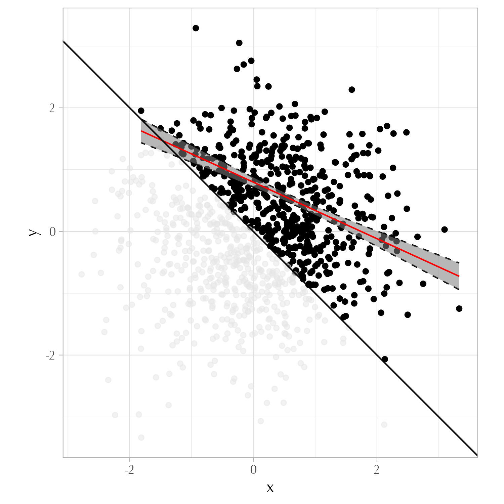
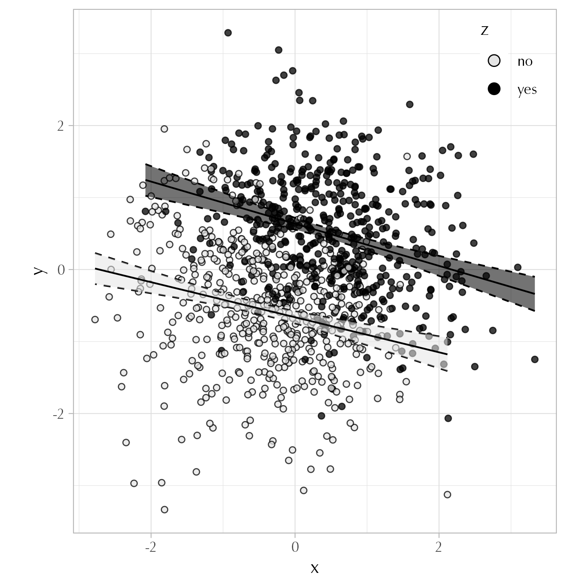

Packages et al.
library(tidyverse)
theme_set(theme_light(base_family = "Optima"))Set up
Colliders
For this exercise I am going to ask you to create the following simulated dataset.
The relationship between \(x\) and \(y\) should look something like this:
Now I am going to ask you to create an association between \(x\) and \(y\) via some form of collider bias.
\[ x \longrightarrow \underbrace{\text{z}}_{\small {\text{collider}}} \longleftarrow y \]
You are tasked to do this in four different ways, each of them corresponding to one of the plots in Figure 4.1.


Hint: The first three plots represent a process in which “conditioning on a collider” means that some observations are removed from the d dataset. You can then calculate the slopes simply by doing something like this:
The last plot represents a process in which the association between \(x\) and \(y\) is created by literally “conditioning on a collider.” Something like this:
Note. The following exercises are problems from NHK (Chapter 10). If you have issues with some of the terminology used, you should be able to figure it out from reading the book.
Define in your own words (i.e., don’t just copy down what’s written in the glossary) each of the following terms:
Conditional average treatment effect
Average treatment on the treated
Average treatment on the untreated
Provide an example of a treatment effect that you would expect to be highly heterogeneous, and explain why you think it is likely to be heterogeneous.
Consider the data in the table below that shows the hypothetical treatment effect of cognitive behavioral therapy on depression for six participants. For the sake of this example, the six participants represent the population of interest.
| Case | Age | Gender | Effect |
|---|---|---|---|
| A | 15 | Man | 7 |
| B | 40 | Woman | 3 |
| C | 30 | Woman | 7 |
| D | 20 | Non-binary | 8 |
| E | 15 | Man | 7 |
| F | 25 | Woman | 4 |
What is the overall average treatment effect for the population?
What is the average treatment effect for Women?
If nearly all Non-binary people get treated, and about half of all Women get treated, and we control for the differences between Women and Non-binary people, what kind of treatment effect average will we get, and what can we say about the numerical estimate we’ll get?
If we assume that, in the absence of treatment, everyone would have had the same outcome, and also only teenagers (19 or younger) ever receive treatment, and we compare treated people to control people, what kind of treatment effect average will we get, and what can we say about the numerical estimate we’ll get?
Give an example where the average treatment effect on the treated would be more useful to consider than the overall average treatment effect, and explain why.
Which of the following describes the average treatment effect of assigning treatment, whether or not treatment is actually received?
Local average treatment effect
Average treatment on the treated
Intent-to-treat
Variance-weighted average treatment effect
Suppose you are conducting an experiment to see whether pricing cookies at $1.99 versus $2 affects the decision to purchase the cookies. The population of interest is all adults in the United States. You recruit people from your university to participate and randomize them to either see cookies priced as $1.99 or $2, then write down whether they purchased cookies. What kind of average treatment effect can you identify from this experiment?
For each of the following identification strategies, what kind of treatment effect(s) is most likely to be identified?
A randomized experiment using a representative sample
True randomization within only a certain demographic group
Closing back door paths connected to variation in treatment
Isolating the part of the variation in treatment variable that is driven by an exogenous variable
The control group is comparable to the treatment group, but treatment effects may be different across these groups
---
title: "Week 4"
callout-appearance: simple
callout-icon: false
---
*Set up*
```{r}
#| code-summary: Packages et al.
#| message: false
library(tidyverse)
theme_set(theme_light(base_family = "Optima"))
```
## Exercise
**Colliders**
For this exercise I am going to ask you to create the following simulated dataset.
```{r}
N <- 1e4
d <- tibble(
x = rnorm(N, 0, 1),
y = rnorm(N, 0, 1)
)
```
The relationship between $x$ and $y$ should look something like this:
{fig-align="center" width="297"}
::: callout-note
Now I am going to ask you to create an association between $x$ and $y$ via some form of collider bias.
$$
x \longrightarrow \underbrace{\text{z}}_{\small {\text{collider}}} \longleftarrow y
$$
You are tasked to do this in four different ways, each of them corresponding to one of the plots in @fig-data.
:::
::: {#fig-data layout-ncol="2"}
{fig-align="center" width="300"}
{fig-align="center" width="302"}
{fig-align="center" width="302"}
{fig-align="center" width="302"}
Conditioning on a Collider
:::
::: callout-tip
Hint: The first three plots represent a process in which "conditioning on a collider" means that some observations are removed from the `d` dataset. You can then calculate the slopes simply by doing something like this:
``` r
lm(y ~ x, data = d_filtered)
```
The last plot represents a process in which the association between $x$ and $y$ is created by literally "conditioning on a collider." Something like this:
``` r
lm(y ~ x + z, data = d)
```
:::
## Exercise
*Note. The following exercises are [problems](https://github.com/NickCH-K/TheEffectAssignments) from NHK (Chapter 10). If you have issues with some of the terminology used, you should be able to figure it out from reading the book.*
Define in your own words (i.e., don’t just copy down what’s written in the glossary) each of the following terms:
a. Conditional average treatment effect
b. Average treatment on the treated
c. Average treatment on the untreated
## Exercise
Provide an example of a treatment effect that you would expect to be highly heterogeneous, and explain why you think it is likely to be heterogeneous.
## Exercise
Consider the data in the table below that shows the hypothetical treatment effect of cognitive behavioral therapy on depression for six participants. For the sake of this example, the six participants represent the population of interest.
| Case | Age | Gender | Effect |
|:----:|:---:|:----------:|:------:|
| A | 15 | Man | 7 |
| B | 40 | Woman | 3 |
| C | 30 | Woman | 7 |
| D | 20 | Non-binary | 8 |
| E | 15 | Man | 7 |
| F | 25 | Woman | 4 |
a. What is the overall average treatment effect for the population?
b. What is the average treatment effect for Women?
c. If nearly all Non-binary people get treated, and about half of all Women get treated, and we control for the differences between Women and Non-binary people, what kind of treatment effect average will we get, and what can we say about the numerical estimate we’ll get?
d. If we assume that, in the absence of treatment, everyone would have had the same outcome, and also only teenagers (19 or younger) ever receive treatment, and we compare treated people to control people, what kind of treatment effect average will we get, and what can we say about the numerical estimate we’ll get?
## Exercise
Give an example where the average treatment effect on the treated would be more useful to consider than the overall average treatment effect, and explain why.
## Exercise
Which of the following describes the average treatment effect of assigning treatment, whether or not treatment is actually received?
a. Local average treatment effect
b. Average treatment on the treated
c. Intent-to-treat
d. Variance-weighted average treatment effect
## Exercise
Suppose you are conducting an experiment to see whether pricing cookies at \$1.99 versus \$2 affects the decision to purchase the cookies. The population of interest is all adults in the United States. You recruit people from your university to participate and randomize them to either see cookies priced as \$1.99 or \$2, then write down whether they purchased cookies. What kind of average treatment effect can you identify from this experiment?
## Exercise
For each of the following identification strategies, what kind of treatment effect(s) is most likely to be identified?
a. A randomized experiment using a representative sample
b. True randomization within only a certain demographic group
c. Closing back door paths connected to variation in treatment
d. Isolating the part of the variation in treatment variable that is driven by an exogenous variable
e. The control group is comparable to the treatment group, but treatment effects may be different across these groups